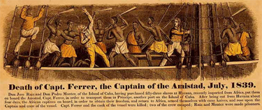
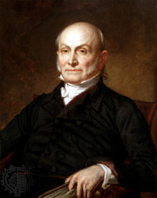

|
The 1839 revolt by captured Africans aboard the Spanish ship Amistad was
a landmark event in the fight against slavery. The ship and its captives became
important symbols for the abolition movement in the United States, while the
legal battle that resulted from the revolt marked the first occasion in which
Africans were allowed to defend their civil rights in an American court.
|

An artist's depiction of the Amistad revolt.
|
In January of 1839, slave raiders captured one of the Mende people of West
Africa, a man named Sengbe Pieh (known as "Cinque"). He was marched from the
interior of Africa to the coast of Sierra Leone and after three months as a
captive, was sold to Spanish slavers. Though the slave trade had been abolished
by Spain nearly twenty years earlier, the law was not enforced in the Spanish
colonies, and so the brutal and lucrative business continued. Cinque and
approximately five hundred other Africans were then packed onto the
Teçora, a Portuguese slave ship, and for two months the ship traveled
across the infamous "Middle Passage" between West Africa and the Americas. Due
to the inhumane conditions on the slave ship, a third of the enslaved Africans
died before the ship reached its destination in the Spanish colony of Cuba. To
circumvent the prohibitions on slave trading, after their arrival the African
captives were fraudulently classified as Cuban-born slaves, which made them
legal for sale in the bustling slave market of Havana. A Spanish planter, José
Ruiz, purchased Cinque and forty-eight other African men from the Teçora.
On the evening of June 28, 1839, Ruiz and another Spanish planter, Pedro
Montes, boarded the schooner called Amistad with the forty-nine slaves
Ruiz had purchased, four children Montes had purchased from a different slave
ship, and a crew of three. On the third night after the Amistad sailed
from Cuba, Cinque and another man freed themselves from their chains, armed
themselves and freed the other slaves. The Africans quickly killed the captain
and gained control of the ship. They spared the lives of Ruiz and Montes on the
promise that the two men would sail the ship back to Africa. However, Montes
deliberately steered the ship in the opposite direction, and after two months
the boat was in waters just east of New York City. Out of provisions, they
anchored off Long Island to get food and supplies. There, they were spotted by
the U.S. Navy, and early on August 26 the Amistad and all its passengers
were seized and escorted to New London, Connecticut.
When Ruiz and Montes were questioned, they claimed the surviving
Africans--thirty-nine adult males, four children, and one Creole cook--were
legally their property. The matter was sent to a grand jury, and the Africans
were jailed in New Haven, Connecticut. In early September, Spain officially
demanded that the Africans be returned to Cuba to be tried for mutiny and
murder. At the same time, American abolitionists formed the "Amistad
Committee" to seek legal counsel and raise funds for the defense of the
Africans. The next month, Yale professor Josiah Gibbs located Mende speakers
working on the docks of New York and employed them as translators. This allowed
Cinque and the other Africans to tell their story, and they pressed charges of
assault and false imprisonment against Ruiz and Montes. The American press was
enthralled.
In January 1840, Cinque and two other Africans testified about their
enslavement and the ensuing revolt for the District Court in New Haven,
Connecticut. Though under enormous political pressure, the judge ruled that the
Africans should be returned to Africa, and placed them under the charge of the
President of the United States, Martin Van Buren. When the decision was appealed
to the Supreme Court, Van Buren was left in a bind. Due to mounting tensions
over the issue of slavery in the United States, the Amistad captives were
a major political liability--no matter how Van Buren handled the situation, he
was certain to anger many voters. He sought to end the case quickly and quietly
by any means necessary--quashing the appeal, smuggling the slaves back to
Cuba--but was unsuccessful.
|

John Quincy Adams
|
On February 22, 1841, the United States Supreme Court heard the
Amistad case. Roger Baldwin and former U.S. president and anti-slavery
advocate John Quincy Adams argued for the freedom of the Africans, basing their
case on the basic liberties of human beings and the illegal trade in slaves.
The Spanish government, by contrast, argued that the United States had no
authority in the case, as the ship was captured in international waters, and
that the captives should be returned to Cuba to stand trial for murder. In March
1841, the Court ruled in favor of the Africans. This was a major victory for
American abolitionists, one of the first for the movement. It also meant a
dramatic expansion in the power of the judicial branch, as the Supreme Court
asserted its right to adjudicate the claims of non-citizens in some situations,
even if those claims involved incidents occurring outside the boundaries of the
United States.
Even with their victory, however, the Africans' struggle was still not at an
end, as new President John Tyler refused to allocate funds for a ship to return
the Amistad captives. The Africans had learned English by this time, and
so in the spring made an extended tour of the United States, telling their story
to thousands and raising money for the return voyage. On November 27, the
thirty-five surviving Africans from the Amistad incident boarded the
vessel Gentleman and sailed back to Africa, landing safely in Sierra
Leone in January 1842.
Source: Christopher Bates, ed. The Encyclopedia of the Early
Republic and Antebellum America (Armonk, NY: M.E. Sharpe, 2010), 77-78.
|